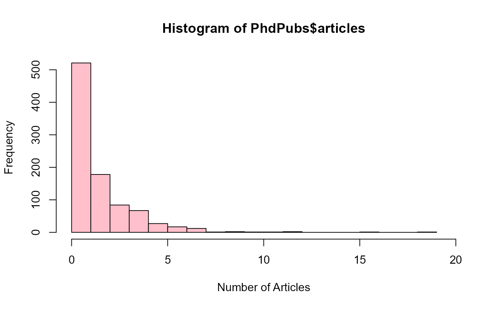

Publications of PhD Candidates
PhdPubs.RdA data set giving the number of publications by doctoral candidates in biochemistry in relation to various predictors, originally from Long (1997).
There is a large number of zero counts. Is there evidence for a separate group of non-publishers?
Usage
data(PhdPubs)Format
A data frame with 915 observations on the following 6 variables.
articlesnumber of articles published in the final three years of PhD studies
femaledummy variable for gender, coded
1for femalemarrieddummy variable for marital status, coded
1for marriedkid5number of young children, age 5 and under
phdprestigeprestige of the PhD department. The higher the number the more prestigious the program.
mentornumber of publications by the mentor in the preceeding three years
Details
In this version of the data set, phdprestige had been rounded to the nearest integer.
A Stata version with the continuous values was subsequently found at
https://www.stata-press.com/data/lf2/couart2.dta
Source
Long, J. S. (1997). Regression Models for Categorical and Limited Dependent Variables, Sage.
Long, J. S. & Freese, J. (2006). Regression Models for Categorical Dependent Variables Using Stata, 2nd Ed., Stata Press.
Examples
data(PhdPubs)
# very uninformative
hist(PhdPubs$articles, breaks=0:19, col="pink", xlim=c(0,20),
xlab="Number of Articles")

library(vcd)
rootogram(goodfit(PhdPubs$articles), xlab="Number of Articles")
# compare with negative binomial
rootogram(goodfit(PhdPubs$articles, type="nbinomial"),
xlab="Number of Articles", main="Negative binomial")